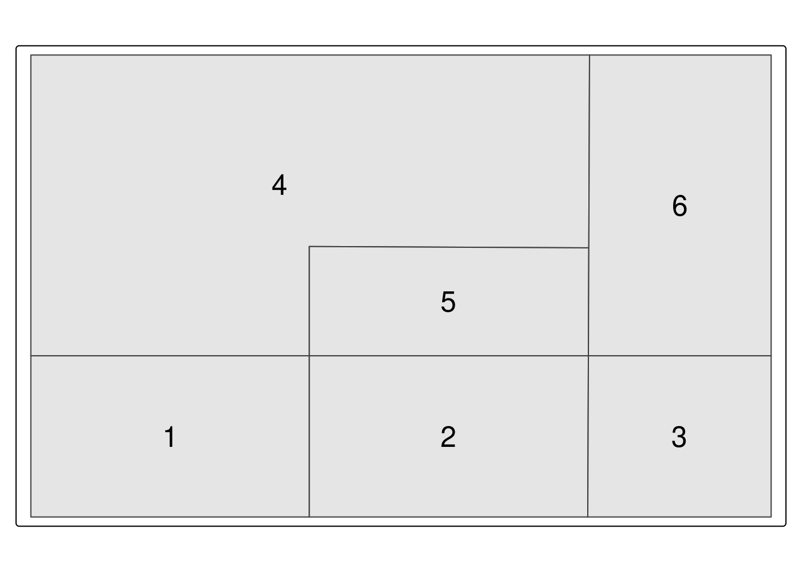
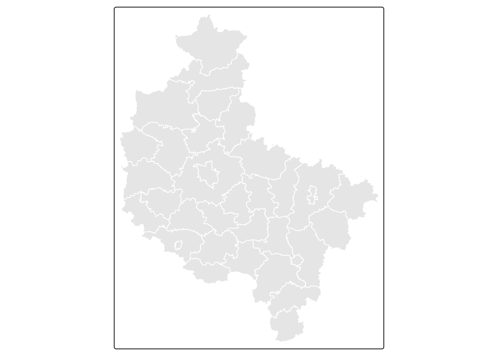
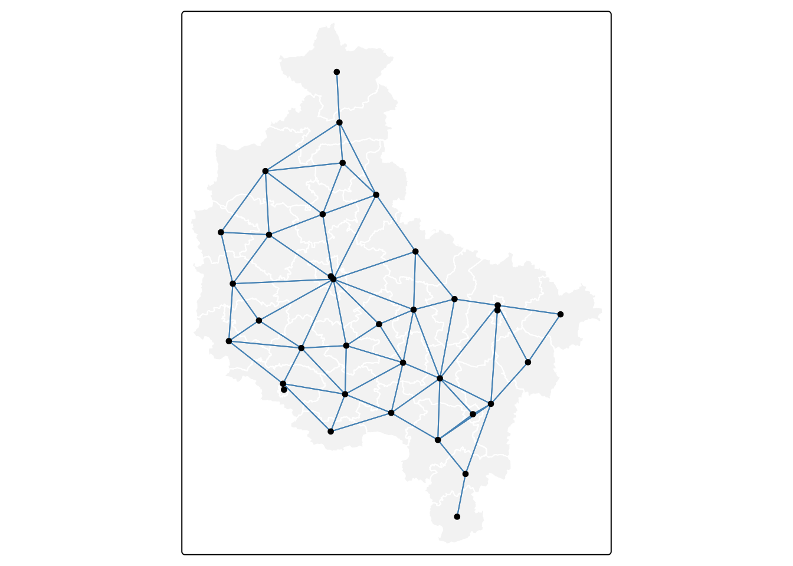
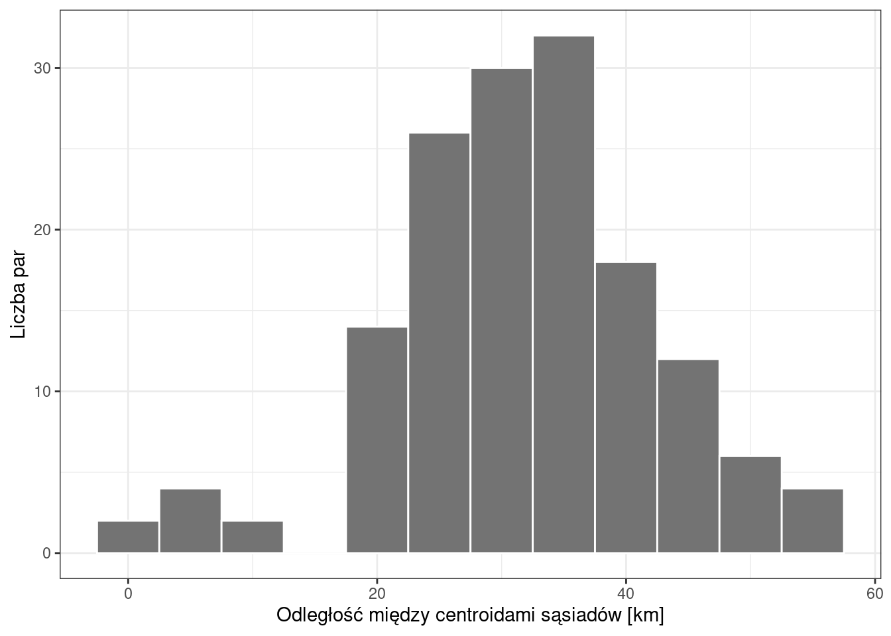

library(sf)
library(spdep)
library(tmap)
library(ggplot2)6 Określanie sąsiedztwa danych obszarowych
Czego się nauczysz
Rozdział jest lekturą — nie przerabiamy go na zajęciach. Pokazuje, jak w R wykonać to, co rozdział teoretyczny części opisuje pojęciowo: zbudować listę sąsiadów i macierz wag przestrzennych według każdego z trzech kryteriów. Zajęcia poświęcone są miarom autokorelacji (Rozdział 7), które z gotowej macierzy wag korzystają.
Po tym rozdziale potrafisz wykonać w R:
- zbudować listę sąsiadów według reguły rook i queen (
poly2nb()), - nadać wagi i otrzymać macierz wag przestrzennych (
nb2listw(),listw2mat()), - wyznaczyć sąsiedztwo według odległości (
dnearneigh()) oraz k najbliższych sąsiadów (knearneigh(),knn2nb()), - obliczyć odległości między sąsiadami (
nbdists()) i przedstawić ich rozkład, - przedstawić sąsiedztwo na mapie (
nb2lines()).
Rozumiesz i umiesz zinterpretować:
- odczyt listy sąsiadów i macierzy wag — co znaczy wiersz, co kolumna,
- skutek standaryzacji wierszami dla obszarów o różnej liczbie sąsiadów,
- dlaczego sąsiedztwo k najbliższych sąsiadów nie jest symetryczne,
- co oznacza komunikat o obszarach bez sąsiadów i kiedy się pojawia.
Teoria: Najważniejsze informacje. Funkcje: Załącznik B. Słownik pojęć: Załącznik D.
6.1 Wprowadzenie
Każda miara autokorelacji przestrzennej wymaga wcześniejszego zapisania informacji o tym, które jednostki ze sobą sąsiadują i jak silne jest ich powiązanie. Zapisem tym jest macierz wag przestrzennych, opisana pojęciowo w rozdziale teoretycznym części.
Budowa macierzy przebiega w R w trzech krokach:
- utworzenie listy sąsiadów —
poly2nb()dla kryterium wspólnej granicy,dnearneigh()dla kryterium odległości,knearneigh()wraz zknn2nb()dla k najbliższych sąsiadów, - nadanie wag —
nb2listw(), - w razie potrzeby przekształcenie w macierz —
listw2mat()albonb2mat().
Trzeci krok jest potrzebny tylko wtedy, gdy chcemy macierz obejrzeć albo przekazać do funkcji spoza pakietu spdep. Funkcje liczące miary autokorelacji przyjmują wynik kroku drugiego.
6.2 Struktura obiektów: lista sąsiadów i macierz wag
Obiekt klasy nb (ang. neighbour list) to lista o tylu elementach, ile jest jednostek. Element i zawiera numery wierszy jednostek sąsiadujących z jednostką i. Jest to wyłącznie informacja o sąsiedztwie: sąsiad albo jest, albo go nie ma.
Obiekt klasy listw (ang. weights list) to lista sąsiadów uzupełniona o wagi przypisane każdej parze sąsiadów. Dopiero on wchodzi do funkcji liczących statystyki. Sposób nadania wag określa argument style:
style |
Wagi | Kiedy używamy |
|---|---|---|
"W" |
standaryzowane wierszami — wagi w każdym wierszu sumują się do 1 | domyślny wybór dla I Morana i C Geary’ego |
"B" |
binarne — 1 dla sąsiada, 0 dla pozostałych | wymagane przez globalG.test(); wygodne do obejrzenia macierzy |
Numer wiersza, nie identyfikator
Obiekty nb i listw odwołują się do jednostek przez numer wiersza, a nie przez identyfikator zapisany w danych. Zmiana kolejności wierszy albo usunięcie choćby jednego wiersza po zbudowaniu listy sąsiadów unieważnia ją. Listę sąsiadów budujemy zawsze na tym obiekcie, na którym liczymy statystyki — i porządkujemy zbiór przed jej zbudowaniem, nie po.
6.3 Przykład 1: sześć obszarów
Pierwszy przykład pracuje na zbiorze na tyle małym, że macierz wag mieści się na ekranie w całości.
Dane
data/area_ex.gpkg— sześć przylegających do siebie poligonów z kolumnąid.
Wiersze w pliku nie są zapisane w kolejności id, a poly2nb() zwraca numery wierszy. Zbiór porządkujemy więc od razu po wczytaniu — inaczej lista sąsiadów nie zgadzałaby się z numeracją widoczną na mapie.
obszary = read_sf("data/area_ex.gpkg")
obszary = obszary[order(obszary$id), ]tm_shape(obszary) +
tm_polygons(fill = "grey90") +
tm_text("id", size = 1.5)
Krok 1: lista sąsiadów
Funkcja poly2nb() buduje listę sąsiadów na podstawie warstwy poligonowej. Argument queen wybiera regułę: FALSE oznacza regułę rook, TRUE — regułę queen.
obszary_nb = poly2nb(obszary, queen = FALSE)
obszary_nbNeighbour list object:
Number of regions: 6
Number of nonzero links: 12
Percentage nonzero weights: 33.33333
Average number of links: 2 Wydruk podaje liczbę jednostek, liczbę niezerowych powiązań i średnią liczbę sąsiadów. Strukturę samej listy pokazuje str():
str(obszary_nb)List of 6
$ : int [1:2] 2 4
$ : int [1:3] 1 3 5
$ : int [1:2] 2 6
$ : int [1:2] 1 5
$ : int [1:2] 2 4
$ : int 3
- attr(*, "class")= chr "nb"
- attr(*, "region.id")= chr [1:6] "1" "2" "3" "4" ...
- attr(*, "call")= language poly2nb(pl = obszary, queen = FALSE)
- attr(*, "type")= chr "rook"
- attr(*, "snap")= num 0.01
- attr(*, "sym")= logi TRUE
- attr(*, "ncomp")=List of 2
..$ nc : int 1
..$ comp.id: int [1:6] 1 1 1 1 1 1Lista ma sześć elementów, po jednym na obszar. Element pierwszy zawiera wartości 2 i 4, czyli obszar 1 ma dwóch sąsiadów: obszar 2 i obszar 4. Atrybut sym informuje, że sąsiedztwo jest symetryczne, a atrybut type — że zbudowano je regułą rook.
Krok 2: macierz binarna
Funkcja nb2listw() uzupełnia listę sąsiadów o wagi. Argument style = "B" nadaje wagi binarne.
obszary_lw = nb2listw(obszary_nb, style = "B")Funkcja listw2mat() przekształca wynik w macierz:
listw2mat(obszary_lw) 1 2 3 4 5 6
1 0 1 0 1 0 0
2 1 0 1 0 1 0
3 0 1 0 0 0 1
4 1 0 0 0 1 0
5 0 1 0 1 0 0
6 0 0 1 0 0 0Wiersz \(i\) i kolumna \(j\) odpowiadają obszarom: wartość 1 oznacza, że obszary sąsiadują, 0 — że nie sąsiadują. Przekątna jest zerowa, bo obszar nie jest sąsiadem samego siebie. Macierz jest symetryczna względem przekątnej: skoro obszar 1 jest sąsiadem obszaru 2, to obszar 2 jest sąsiadem obszaru 1.
Krok 3: standaryzacja wierszami
Argument style = "W" standaryzuje wagi wierszami, tak aby sumowały się do jedynki:
obszary_lw_w = nb2listw(obszary_nb, style = "W")
round(listw2mat(obszary_lw_w), 2) 1 2 3 4 5 6
1 0.00 0.5 0.00 0.5 0.00 0.0
2 0.33 0.0 0.33 0.0 0.33 0.0
3 0.00 0.5 0.00 0.0 0.00 0.5
4 0.50 0.0 0.00 0.0 0.50 0.0
5 0.00 0.5 0.00 0.5 0.00 0.0
6 0.00 0.0 1.00 0.0 0.00 0.0Obszar 2 ma trzech sąsiadów, więc każdy dostaje wagę 0,33; obszar 1 ma dwóch — po 0,5; obszar 6 ma jednego, który dostaje wagę 1,0. Macierz standaryzowana wierszami przestaje być symetryczna: waga pary (3, 6) wynosi 0,5, a pary (6, 3) — 1,0, bo oba obszary mają różną liczbę sąsiadów.
Krok 4: reguła queen
obszary_nb_q = poly2nb(obszary, queen = TRUE)Liczbę sąsiadów każdego obszaru przy obu regułach podaje funkcja card():
data.frame(id = obszary$id,
rook = card(obszary_nb),
queen = card(obszary_nb_q)) id rook queen
1 1 2 3
2 2 3 5
3 3 2 3
4 4 2 4
5 5 2 5
6 6 1 4Reguła queen dodaje obszary stykające się narożnikiem, więc liczba powiązań rośnie — z 12 do 24. Na sześciu obszarach różnicę widać w całej macierzy; przy kilkuset jednostkach trzeba poprzestać na liczbach zbiorczych.
6.4 Przykład 2: powiaty województwa wielkopolskiego
Drugi przykład pokazuje wszystkie trzy kryteria sąsiedztwa na danych rzeczywistych.
Dane
data/wlkp_powiaty.gpkg— 35 powiatów województwa wielkopolskiego, warstwapowiaty, kolumnyNazwaiTERYT, układ PUWG 1992 (EPSG:2180).
Wyznaczenie sąsiedztwa nie wymaga żadnej zmiennej atrybutowej — wystarczy geometria.
powiaty = read_sf("data/wlkp_powiaty.gpkg", layer = "powiaty")tm_shape(powiaty) +
tm_polygons(fill = "grey90", col = "white")
Krok 1: kryterium wspólnej granicy
powiaty_nb = poly2nb(powiaty, queen = TRUE)
powiaty_nbNeighbour list object:
Number of regions: 35
Number of nonzero links: 150
Percentage nonzero weights: 12.2449
Average number of links: 4.285714 Średnia liczba sąsiadów wynosi 4,3, a łączna liczba powiązań — 150. Sąsiadów wskazanego powiatu odczytujemy, indeksując kolumnę z nazwami numerami wierszy z listy:
powiaty$Nazwa[powiaty_nb[[which(powiaty$Nazwa == "poznański")]]] [1] "gnieźnieński" "grodziski" "kościański" "nowotomyski" "obornicki"
[6] "Poznań" "szamotulski" "średzki" "śremski" "wągrowiecki"
[11] "wrzesiński" Powiat poznański ma 11 sąsiadów — najwięcej w województwie, co wynika z jego pierścieniowego kształtu wokół Poznania.
Krok 2: wizualizacja sąsiedztwa
Sąsiedztwo przedstawia się jako graf: wierzchołkami są centroidy jednostek, a krawędziami — powiązania. Funkcja nb2lines() zamienia listę sąsiadów na warstwę liniową; argument as_sf = TRUE sprawia, że wynikiem jest obiekt sf.
centroidy = st_centroid(st_geometry(powiaty), of_largest_polygon = TRUE)
powiaty_linie = nb2lines(powiaty_nb, coords = centroidy, as_sf = TRUE)tm_shape(powiaty) +
tm_polygons(fill = "grey95", col = "white") +
tm_shape(powiaty_linie) +
tm_lines(col = "steelblue") +
tm_shape(st_sf(geom = centroidy)) +
tm_dots(size = 0.3)
Gęstość krawędzi na mapie odpowiada liczbie sąsiadów: wokół powiatu poznańskiego widać wyraźne zagęszczenie.
Krok 3: odległości między sąsiadami
Przed zastosowaniem kryterium odległości trzeba wiedzieć, jakie odległości faktycznie występują między sąsiadującymi jednostkami. Podaje je funkcja nbdists(), przyjmująca listę sąsiadów i centroidy.
powiaty_odl = nbdists(powiaty_nb, centroidy)
odleglosci_km = unlist(powiaty_odl) / 1000
summary(odleglosci_km) Min. 1st Qu. Median Mean 3rd Qu. Max.
2.063 24.892 31.809 31.915 37.644 54.911 ggplot(data.frame(d = odleglosci_km), aes(d)) +
geom_histogram(binwidth = 5, fill = "grey45", colour = "white") +
labs(x = "Odległość między centroidami sąsiadów [km]", y = "Liczba par") +
theme_bw()
Odległości wahają się od 2,1 km do 54,9 km przy medianie 31,8 km. Rozkład jest zbliżony do symetrycznego, a wartości skrajne odpowiadają z jednej strony parom miast na prawach powiatu i powiatów je otaczających, z drugiej — powiatom rozległym.
Krok 4: kryterium odległości
Funkcja dnearneigh() wyznacza sąsiadów na podstawie odległości między centroidami. Argumenty d1 i d2 podają dolną i górną granicę przedziału, w jednostkach układu współrzędnych — tutaj w metrach.
powiaty_nb_d = dnearneigh(centroidy, d1 = 0, d2 = 30000)Warning in dnearneigh(centroidy, d1 = 0, d2 = 30000): neighbour object has 8
sub-graphspowiaty_nb_dNeighbour list object:
Number of regions: 35
Number of nonzero links: 64
Percentage nonzero weights: 5.22449
Average number of links: 1.828571
5 regions with no links:
2, 3, 10, 19, 31
8 disjoint connected subgraphsWydruk zawiera informację, której przy regule queen nie było: 5 powiatów nie ma żadnego sąsiada, a graf rozpada się na 8 osobnych części. Przy progu 30 km, czyli poniżej mediany odległości, dla części powiatów żaden centroid nie mieści się w promieniu.
powiaty$Nazwa[card(powiaty_nb_d) == 0][1] "czarnkowsko-trzcianecki" "gnieźnieński"
[3] "kolski" "obornicki"
[5] "turecki"
Obszary bez sąsiadów unieważniają dalsze obliczenia
Funkcje liczące miary autokorelacji domyślnie przerywają działanie, gdy w liście sąsiadów jest jednostka bez powiązań — bo nie da się dla niej policzyć średniej wartości u sąsiadów. Dopuszczenie takich jednostek wymaga argumentu zero.policy = TRUE, który każe traktować ich zmienną opóźnioną przestrzennie jako zero. Jest to rozwiązanie techniczne, nie merytoryczne: jednostka bez sąsiadów nie wnosi do analizy informacji o sąsiedztwie.
Prostszym wyjściem jest dobranie progu po obejrzeniu rozkładu odległości z kroku 3.
Próg 40 km nie zostawia już żadnego powiatu bez sąsiadów:
powiaty_nb_d40 = dnearneigh(centroidy, d1 = 0, d2 = 40000)
powiaty_nb_d40Neighbour list object:
Number of regions: 35
Number of nonzero links: 140
Percentage nonzero weights: 11.42857
Average number of links: 4 Krok 5: k najbliższych sąsiadów
Kryterium k najbliższych sąsiadów wyznacza dla każdej jednostki ustaloną liczbę sąsiadów — tych, których centroidy leżą najbliżej. Funkcja knearneigh() zwraca obiekt pośredni, a knn2nb() zamienia go na listę sąsiadów.
powiaty_knn = knearneigh(centroidy, k = 5)
powiaty_nb_knn = knn2nb(powiaty_knn)
powiaty_nb_knnNeighbour list object:
Number of regions: 35
Number of nonzero links: 175
Percentage nonzero weights: 14.28571
Average number of links: 5
Non-symmetric neighbours listKażda jednostka ma dokładnie pięciu sąsiadów. Dla pierwszego powiatu w zbiorze są to:
powiaty$Nazwa[powiaty_nb_knn[[1]]][1] "czarnkowsko-trzcianecki" "obornicki"
[3] "pilski" "wągrowiecki"
[5] "złotowski" is.symmetric.nb(powiaty_nb_knn)[1] FALSE
Sąsiedztwo k najbliższych sąsiadów nie jest symetryczne
Jeżeli powiat A należy do pięciu najbliższych sąsiadów powiatu B, nie wynika z tego, że B należy do pięciu najbliższych sąsiadów powiatu A. Powiat rozległy, otoczony wieloma małymi, znajdzie się na ich listach, podczas gdy na jego własnej liście zmieści się tylko pięć z nich.
Sąsiedztwo wyznaczone wspólną granicą i promieniem d jest symetryczne; to wyznaczone kryterium k najbliższych sąsiadów — nie. Część procedur statystycznych zakłada symetrię, dlatego warto to sprawdzić funkcją is.symmetric.nb().
Krok 6: odległość odwrotna
Kryterium odległości odwrotnej nadaje wagi malejące wraz z odległością, zamiast dzielić jednostki na sąsiadów i niesąsiadów. Wagi przygotowuje się samodzielnie z wyniku nbdists() i przekazuje do nb2listw() argumentem glist:
odl_d40 = nbdists(powiaty_nb_d40, centroidy)
wagi_odwrotne = lapply(odl_d40, function(d) 1 / (d / 1000))
powiaty_lw_inv = nb2listw(powiaty_nb_d40, glist = wagi_odwrotne, style = "W")
round(powiaty_lw_inv$weights[[1]], 3)[1] 0.282 0.383 0.335Pierwszy powiat ma przy progu 40 km trzech sąsiadów, a wagi nie są równe: sąsiad położony bliżej dostaje wagę wyższą. Przy style = "W" wagi nadal sumują się w wierszu do jedynki, ale rozkładają się między sąsiadów proporcjonalnie do odwrotności odległości.
Porównanie trzech kryteriów
Dla powiatu poznańskiego trzy kryteria dają trzy różne zbiory sąsiadów:
| Kryterium | Funkcja | Liczba sąsiadów powiatu poznańskiego |
|---|---|---|
| wspólna granica (queen) | poly2nb(queen = TRUE) |
11 |
| odległość — próg 30 km | dnearneigh(d2 = 30000) |
1 |
| odległość — próg 40 km | dnearneigh(d2 = 40000) |
4 |
| 5 najbliższych sąsiadów | knearneigh(k = 5) |
5 |
Trzy kryteria dają tu cztery wiersze, bo kryterium odległości pokazane jest przy dwóch progach — sam próg jest, obok wyboru kryterium, drugą decyzją analityka.
Żadne z tych kryteriów nie jest poprawniejsze od pozostałych — każde opisuje inne rozumienie bliskości. Wybór należy do analityka i podaje się go razem z wynikiem, bo każda miara autokorelacji policzona na tych danych będzie od niego zależeć.
Reguła rook a queen na danych administracyjnych
Dla powiatów województwa wielkopolskiego obie reguły dają ten sam wynik — średnio 4,3 sąsiada. Styk w jednym punkcie, który odróżnia regułę queen od rook, w podziałach administracyjnych zdarza się rzadko; pojawia się za to regularnie w siatkach regularnych i w danych rastrowych. Dlatego różnicę między regułami pokazuje Przykład 1 na sztucznej siatce, a nie ten przykład.
6.5 Pytania kontrolne
1. Co zwraca funkcja
poly2nb()— identyfikatory obszarów czy numery wierszy? Co z tego wynika dla przygotowania danych?
Sprawdź odpowiedź
Numery wierszy. Lista sąsiadów nie zna identyfikatorów zapisanych w kolumnach danych, więc element i zawiera numery wierszy, nie wartości id czy TERYT.
Wynika z tego, że zbiór trzeba uporządkować przed zbudowaniem listy sąsiadów, a po jej zbudowaniu nie wolno zmieniać kolejności wierszy ani usuwać wierszy — lista przestałaby pasować do danych. W Przykładzie 1 plik ma wiersze w innej kolejności niż id, dlatego porządkujemy go zaraz po wczytaniu.
2. Dlaczego macierz z wagami binarnymi jest symetryczna, a macierz standaryzowana wierszami nie?
Sprawdź odpowiedź
Macierz binarna zapisuje samą relację sąsiedztwa, a ta jest wzajemna: jeśli obszar 1 sąsiaduje z obszarem 2, to obszar 2 sąsiaduje z obszarem 1. Stąd wartość w komórce (1, 2) równa się wartości w komórce (2, 1).
Standaryzacja wierszami dzieli każdą wagę przez liczbę sąsiadów danego wiersza. Obszary mające różną liczbę sąsiadów dzielą więc przez różne liczby. W Przykładzie 1 obszar 3 ma dwóch sąsiadów, a obszar 6 jednego, więc waga pary (3, 6) wynosi 0,5, a pary (6, 3) — 1,0.
3. Kiedy używa się
style = "B", a kiedystyle = "W"?
Sprawdź odpowiedź
style = "W" — wagi standaryzowane wierszami — jest domyślnym wyborem dla statystyk I Morana i C Geary’ego. Dzięki standaryzacji zmienna opóźniona przestrzennie jest średnią wartością u sąsiadów, co ułatwia interpretację.
style = "B" — wagi binarne — są wymagane przez globalG.test(), bo statystyka G Getisa & Orda jest zbudowana jako udział sum iloczynów i wymaga wag zaznaczających wyłącznie sąsiedztwo. Wagi binarne są też wygodniejsze, gdy chcemy obejrzeć samą macierz sąsiedztwa.
4. Po zastosowaniu kryterium odległości wydruk informuje o obszarach bez sąsiadów. Co to oznacza i co z tym zrobić?
Sprawdź odpowiedź
Oznacza, że dla tych jednostek żaden centroid nie mieści się w zadanym promieniu — przyjęty próg jest za mały względem faktycznych odległości w zbiorze.
Funkcje liczące miary autokorelacji domyślnie przerwą działanie, bo dla jednostki bez sąsiadów nie da się policzyć zmiennej opóźnionej przestrzennie. Można to obejść argumentem zero.policy = TRUE, ale jest to rozwiązanie techniczne: taka jednostka nie wnosi do analizy informacji o sąsiedztwie. Lepiej dobrać próg po obejrzeniu rozkładu odległości — dla powiatów województwa wielkopolskiego próg 30 km zostawia pięć powiatów bez sąsiadów, a próg 40 km już żadnego.
5. Dlaczego sąsiedztwo wyznaczone kryterium k najbliższych sąsiadów nie jest symetryczne?
Sprawdź odpowiedź
Bo liczba sąsiadów jest narzucona z góry i taka sama dla każdej jednostki, a odległości między centroidami — nie. Jednostka rozległa, otoczona wieloma małymi, znajdzie się na ich listach najbliższych sąsiadów, podczas gdy na jej własnej liście zmieści się tylko k z nich.
Sąsiedztwo wyznaczone wspólną granicą i promieniem d jest symetryczne. Symetrię sprawdza funkcja is.symmetric.nb().
6. Trzy kryteria dały dla powiatu poznańskiego 11 (wspólna granica), 4 (odległość do 40 km) i 5 (pięciu najbliższych sąsiadów). Które jest poprawne?
Sprawdź odpowiedź
Żadne nie jest poprawniejsze od pozostałych — każde opisuje inne rozumienie bliskości. Kryterium wspólnej granicy mówi o przyleganiu, kryterium odległości o położeniu w zadanym promieniu, kryterium k najbliższych sąsiadów o kolejności odległości.
Wybór jest decyzją analityka, a nie własnością danych, i podaje się go razem z wynikiem — każda miara autokorelacji policzona na tych danych będzie od niego zależeć. Przy danych administracyjnych najczęściej stosuje się kryterium wspólnej granicy, bo odpowiada intuicyjnemu rozumieniu sąsiedztwa jednostek podziału.
6.6 Podsumowanie
| Kryterium | Funkcja | Co zwraca | Na co zwrócić uwagę |
|---|---|---|---|
| wspólna granica | poly2nb(queen =) |
lista sąsiadów klasy nb |
queen = FALSE to reguła rook; na danych administracyjnych obie reguły dają często ten sam wynik |
| odległość do d | dnearneigh(d1 =, d2 =) |
lista sąsiadów klasy nb |
odległość w jednostkach układu współrzędnych; sprawdź komunikat o obszarach bez sąsiadów |
| k najbliższych sąsiadów | knearneigh(k =) + knn2nb() |
lista sąsiadów klasy nb |
sąsiedztwo nie jest symetryczne |
| nadanie wag | nb2listw(style =, glist =) |
obiekt klasy listw |
"W" standaryzowane wierszami, "B" binarne; glist dla wag własnych, np. odwrotności odległości |
| macierz | listw2mat(), nb2mat() |
macierz \(N \times N\) | tylko do obejrzenia albo dla funkcji spoza spdep |
| odległości między sąsiadami | nbdists() |
lista odległości | podstawa doboru progu w dnearneigh() |
| liczba sąsiadów | card() |
wektor liczb całkowitych | zero oznacza jednostkę bez powiązań |
| wizualizacja | nb2lines(as_sf = TRUE) |
warstwa liniowa sf |
wierzchołkami grafu są centroidy |
6.7 Pełny kod analizy
Poniżej zebrany jest cały kod obu przykładów, w kolejności wykonania — do skopiowania do własnego skryptu zamiast przeklejania pojedynczych fragmentów. Rozdział jest lekturą, nie ma więc zadania do wykonania; blok służy do samodzielnego powtórzenia pokazanych kroków na własnych danych.
library(sf)
library(spdep)
library(tmap)
library(ggplot2)
obszary = read_sf("data/area_ex.gpkg")
obszary = obszary[order(obszary$id), ]
tm_shape(obszary) +
tm_polygons(fill = "grey90") +
tm_text("id", size = 1.5)
obszary_nb = poly2nb(obszary, queen = FALSE)
obszary_nb
str(obszary_nb)
obszary_lw = nb2listw(obszary_nb, style = "B")
listw2mat(obszary_lw)
obszary_lw_w = nb2listw(obszary_nb, style = "W")
round(listw2mat(obszary_lw_w), 2)
obszary_nb_q = poly2nb(obszary, queen = TRUE)
data.frame(id = obszary$id,
rook = card(obszary_nb),
queen = card(obszary_nb_q))
powiaty = read_sf("data/wlkp_powiaty.gpkg", layer = "powiaty")
tm_shape(powiaty) +
tm_polygons(fill = "grey90", col = "white")
powiaty_nb = poly2nb(powiaty, queen = TRUE)
powiaty_nb
powiaty$Nazwa[powiaty_nb[[which(powiaty$Nazwa == "poznański")]]]
centroidy = st_centroid(st_geometry(powiaty), of_largest_polygon = TRUE)
powiaty_linie = nb2lines(powiaty_nb, coords = centroidy, as_sf = TRUE)
tm_shape(powiaty) +
tm_polygons(fill = "grey95", col = "white") +
tm_shape(powiaty_linie) +
tm_lines(col = "steelblue") +
tm_shape(st_sf(geom = centroidy)) +
tm_dots(size = 0.3)
powiaty_odl = nbdists(powiaty_nb, centroidy)
odleglosci_km = unlist(powiaty_odl) / 1000
summary(odleglosci_km)
ggplot(data.frame(d = odleglosci_km), aes(d)) +
geom_histogram(binwidth = 5, fill = "grey45", colour = "white") +
labs(x = "Odległość między centroidami sąsiadów [km]", y = "Liczba par") +
theme_bw()
powiaty_nb_d = dnearneigh(centroidy, d1 = 0, d2 = 30000)
powiaty_nb_d
powiaty$Nazwa[card(powiaty_nb_d) == 0]
powiaty_nb_d40 = dnearneigh(centroidy, d1 = 0, d2 = 40000)
powiaty_nb_d40
powiaty_knn = knearneigh(centroidy, k = 5)
powiaty_nb_knn = knn2nb(powiaty_knn)
powiaty_nb_knn
powiaty$Nazwa[powiaty_nb_knn[[1]]]
is.symmetric.nb(powiaty_nb_knn)
odl_d40 = nbdists(powiaty_nb_d40, centroidy)
wagi_odwrotne = lapply(odl_d40, function(d) 1 / (d / 1000))
powiaty_lw_inv = nb2listw(powiaty_nb_d40, glist = wagi_odwrotne, style = "W")
round(powiaty_lw_inv$weights[[1]], 3)